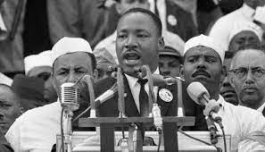

Martin Luther King Jr. was born in Atlanta, Georgia on the January 15, 1929.
He was a civil rights activist in the 1950s and 1960s. He led non-violent protests to fight for the rights of all people including African Americans. He hoped that America and the world could form a society where race would not impact a person's civil rights. He is considered one of the great orators of modern times, and his speeches still inspire many to this day.
In 1963, Martin Luther King, Jr. helped to organize the famous March on Washington. Over 250,000 people attended this march in an effort to show the importance of civil rights legislation. Some of the issues the march hoped to accomplish included an end to segregation in public schools, protection from police abuse, and to get laws passed that would prevent discrimination in employment. It was at this march where Martin gave his I Have a Dream speech. This speech has become one of the most famous speeches in history. The March on Washington was a great success. The Civil Rights Act was passed a year later in 1964. Below is a picture and a recording captured during the famous speech:

Martin Luther King, Jr. was assassinated on April 4, 1968 in Memphis, TN. While standing on the balcony of his hotel, he was shot by James Earl Ray. He was the greatest because he believed in nonviolent protests and made sure others followed him in this quest. His greatest leadership quality was integrity, which he showed when he gave his life for what he was fighting for. He also showed integrity by taking responsibility for his actions.
For more about King's life and achievements, visit this website